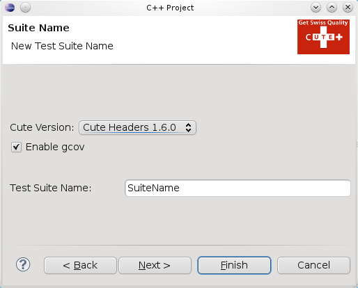

The CUTE plug-in supports 3 different project types.
This is the most simple CUTE project. The productive code and the test code is in the same project.
The CUTE Library Test Project contains the test code for a library project. You can choose your library you want to test on the 2nd page of the project wizard.

The build settings of the CUTE project will include the library project.
This project wizard creates CUTE project with a suite.
